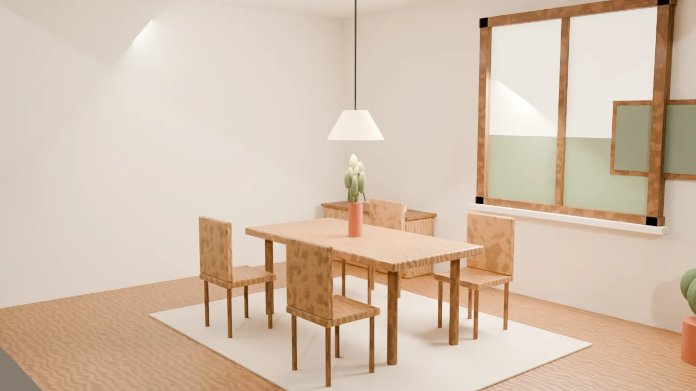
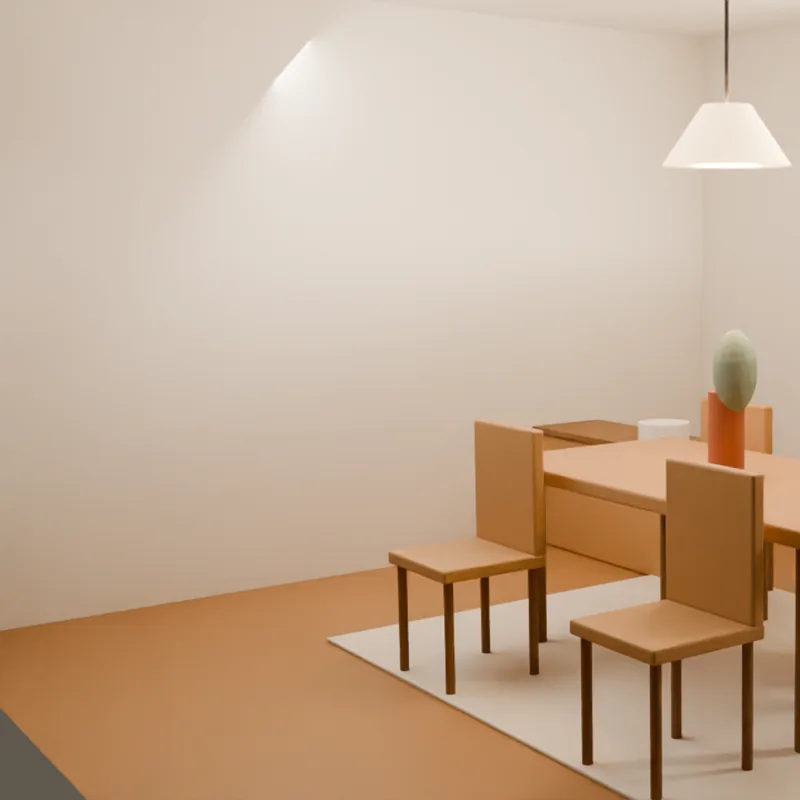
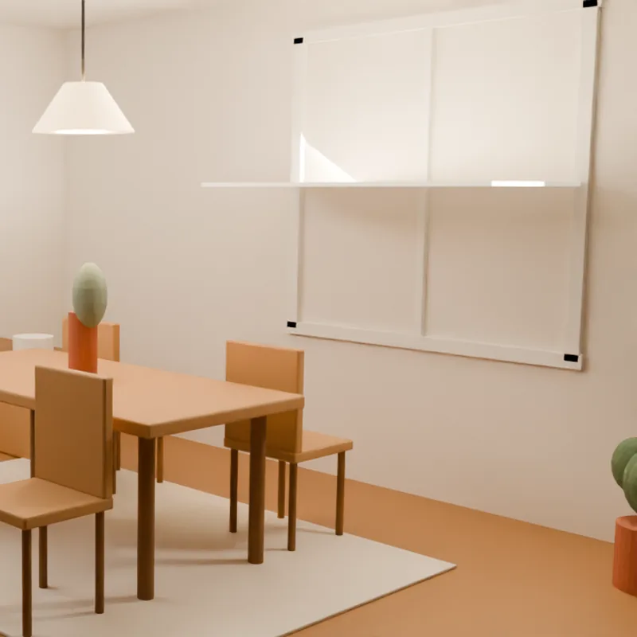

All work
Visual study · Dining · 2026
Dining Corner
An oak table under a single pendant — a dining corner designed for slow evenings and long lunches.

A room built around light, texture and restraint.
A round of chairs, one generous table and a pendant hung low enough to pool light on the surface. The sideboard holds the things a dining room accumulates: bowls, candles, a vase that is usually empty.
Terracotta and sage keep the room from becoming too polite. The study was rendered in Blender to test proportion and the warmth of the light before committing to materials.


Next project